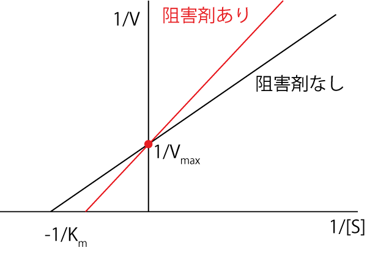

ミカエリスメンテン-競争阻害-03
次に，以下の反応スキームのように阻害剤が酵素[E]に影響を与える場合にどうなるかを考えていきましょう．
\( \Large \hspace{15 pt} \ce{E <=>C[S][]ES ->C[] E + P} \)
\( \Large I \downarrow \uparrow \)
\( \Large \hspace{10 pt} EI \)
この場合を競争阻害，と呼びます．
解離定数を定義します．
\( \Large K_m \equiv \frac{[E][S]}{[ES]} \)
\( \Large K_I \equiv \frac{[E][I]}{[EI]} \)
書き直すと，
\( \Large [E] = \frac{K_m}{[S]} \cdot [ES] \)
\( \Large \begin{eqnarray} [EI] &=& \frac{[I]}{K_I} \cdot [E] \\
&=&
\frac{[I]}{K_I} \cdot \frac{K_m}{[S]} \cdot [ES] \\
\end{eqnarray} \)
酵素の保存則，
\( \Large [E_T] = [E] + [ES] + [EI] \)
を使うと，
\( \Large \begin{eqnarray} [E_T] &=& \frac{K_m}{[S]} \cdot [ES] + [ES] + \frac{[I]}{K_I} \cdot \frac{K_m}{[S]} \cdot [ES] \\
&=& [ES] \cdot \left( 1 +
\frac{K_m}{[S]} + \frac{[I]}{K_I} \cdot \frac{K_m}{[S]} \right) \\
&=& [ES] \cdot \left( \frac{K_I \cdot [S] +K_I \cdot K_m + K_m \cdot [I]}{K_I \cdot [S]} \right) \\
\end{eqnarray} \)
\( \Large [ES] = [E_T] \frac{K_I \cdot [S]}{K_I \cdot [S] +K_I \cdot K_m + K_m \cdot [I]} \)
\( \Large V_P= k_{+2}\cdot [E_T] \frac{K_I \cdot [S]}{K_I \cdot [S] +K_I \cdot K_m + K_m \cdot [I]} \)
\( \Large V_P= V_{max}\frac{K_I \cdot [S]}{K_I \cdot [S] +K_I \cdot K_m + K_m \cdot [I]} \)
となります．
逆数を取ると，
\( \Large \begin{eqnarray} \frac{1}{V_P}&=& \frac{1}{V_{max}} \frac{K_I \cdot [S] +K_I \cdot K_m + K_m \cdot [I]}{K_I \cdot [S]} \\
&=&
\frac{1}{V_{max}} + \frac{K_m}{V_{max}}\frac{K_I + [I]}{K_I } \frac{1}{[S]} \\
&=&
\frac{1}{V_{max}} + \frac{K_m}{V_{max}} \left( 1+ \frac{ [I]}{K_I } \right) \frac{1}{[S]} \\
\end{eqnarray} \)
となります．阻害剤がないときと比べると，
\( \Large \frac{1}{V_P} ＝ \frac{1}{V_{max}} + \frac{K_m }{V_{max}} \frac{1}{ [S]} \)
となり，
\( \Large K_m \Longrightarrow K_m \left( 1+ \frac{ [I]}{K_I } \right)\)
とKm値が大きくなっていることがわかります．逆にVmax値は変わらないことがわかります．
グラフで表すと，Km値（X切片）は変化し，Vmax値（Y切片）は変わらないので，

となります．
次に，別の反応式の阻害剤がある時の計算を考えていきます．